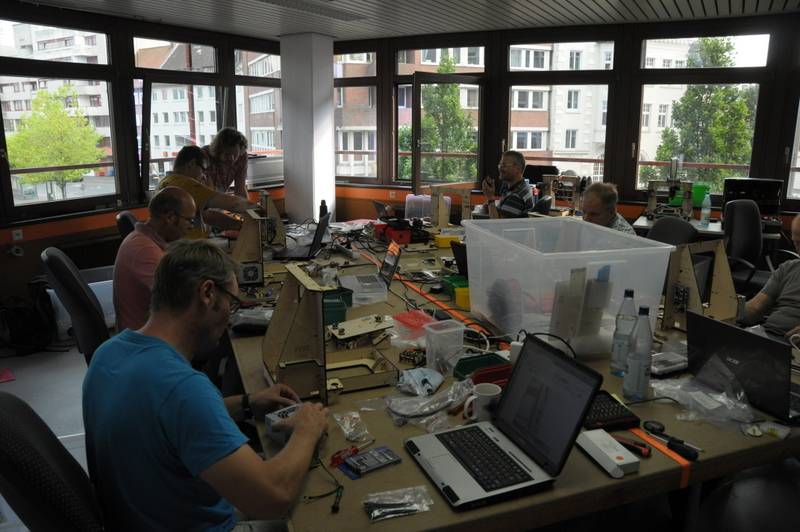
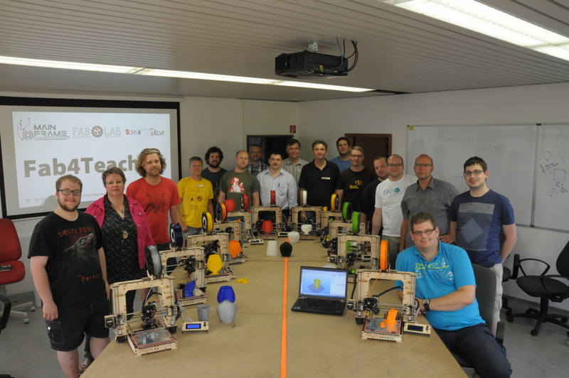

{% block content %}

{% filter markdown|typogrify -%}

Nach den großartiken Erfahrungen im letzten Jahr, konnten wir auch dieses Jahr die Fab4Teachers Veranstaltung durchführen - mit
deutlich mehr Anmeldungen und einem und neuem Partner Metropolregion.

Mit Unterstützung der Wirtschaftsförderung Oldenburg konnten wir die Metropolregion Nordwest (ehemals
Bremen-Oldenburg) als Projekt-Förderer gewinnen und vom 5. bis zum 7.
September die nächste Generation der von uns speziell für den
Schul-Einsatz entwickelden 3D-Drucker namens "JoSeb" mit 12 engagierten
Lehrerinnen und Lehrern aus der Metropolregion bauen.

Obwohl ein entsprechender Bausatz allein an die 1.000 Euro
kostet, betrug die Selbstbeteiligung der Schulen/Lehrkräfte nur 500 Euro
für die gesamte Fortbildung.



Unsere neuen Räumlichkeiten in der alten Post am Bahnhof boten
ausreichend Platz und viele Mitglieder haben in der Vorbereitung und
Durchführung mit angepackt und die Fortbildung zu einem vollen Erfolg
gemacht. Bereits am ersten Tag war ein Drucker fertig, am zweiten Tag
haben alle Geräte gedruckt.

Am dritten Tag konnten wir uns so mit dem Weg vom Gedanken zum 3D-Modell
mit verschiedenen CAD-Programmen und 3D-Scannern beschäftigen.

Besonders wichtig für die Lehrerinnen und Lehrer ist auch die Vernetzung
mit den anderen Kollegen und die Einbettung in eine aktive Community aus
inzwischen 24 Lehrkräften aus Niedersachsen und Bremen, in der sich
gegenseitig unterstützt und gemeinsam an Unterrichtsmaterialien
gearbeitet wird.

Auch dieses mal wurden wir wieder von Prof. Ira Diethelm und ihrem Mitarbeiter
Marius Griege von der Universität Oldenburg (Didaktik der Informatik) wissenschaftlich
begleitet.



Mehr Fotos findet ihr <a href="//www.kreativitaet-trifft-technik.de/album.html#/a/(2014.09)_Fab4Teachers">hier in unserem Album</a>.

{%- endfilter %}

{% endblock content %}
